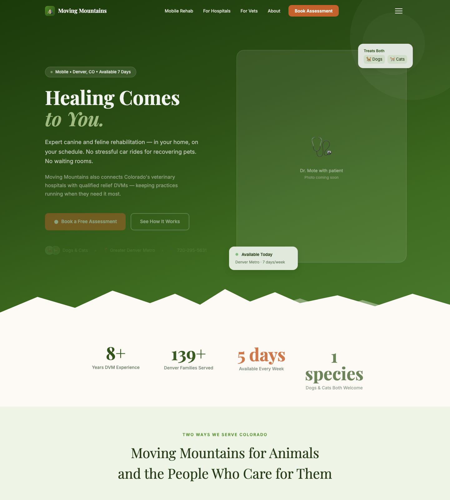
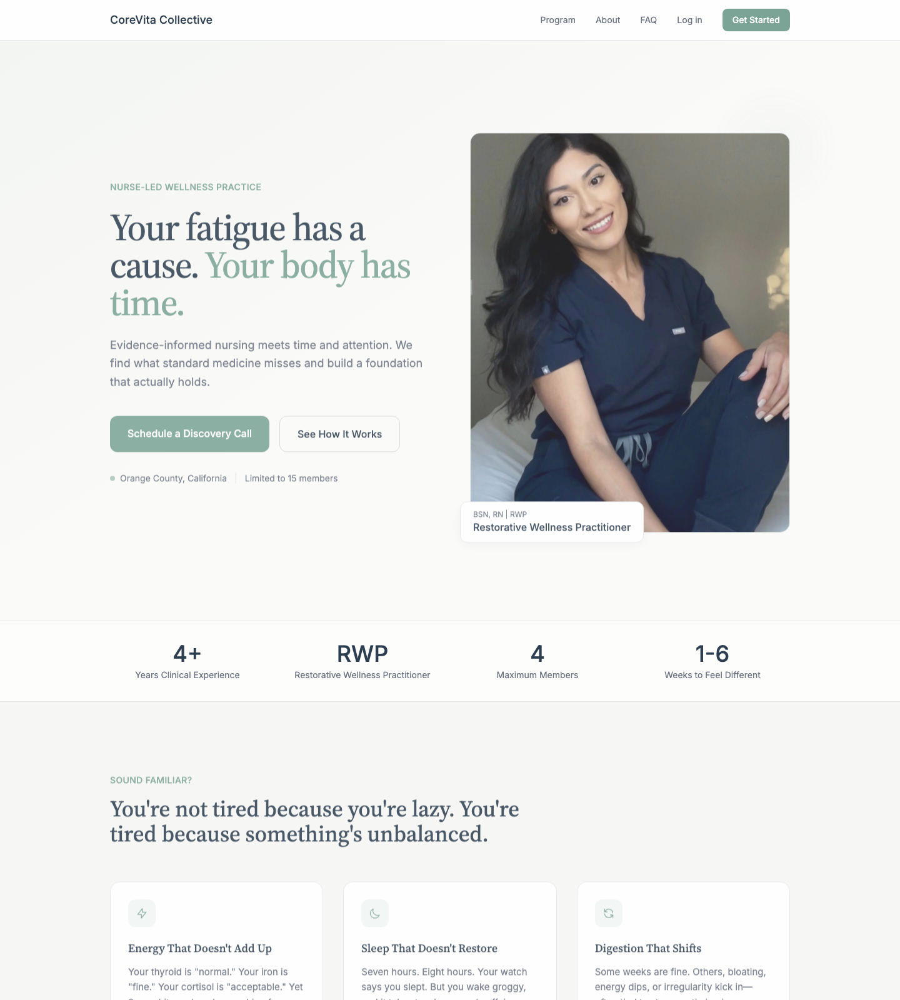
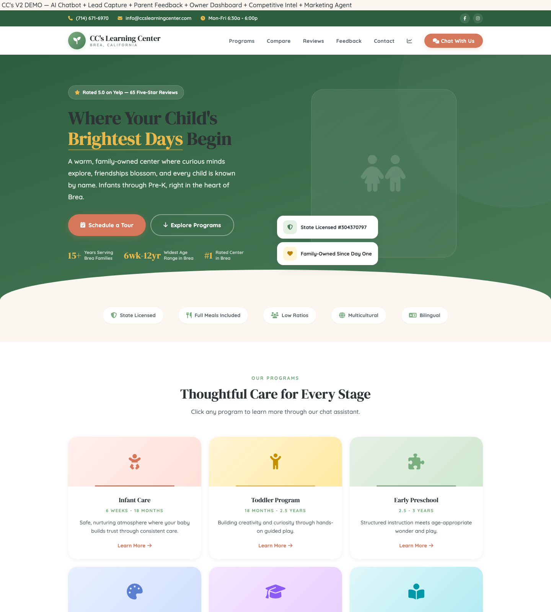

Each client site was rebuilt into its own bespoke visual identity, deliberately distinct from the other two and from the Mote Ops house look. On the left, the previous live site, captured the moment before deploy. On the right, the new build, running live right now on GitHub Pages.
Identity: alpine and outdoorsy. Forest green and dusk blue with a sunrise clay accent, sturdy Bricolage Grotesque headlines over Hanken Grotesk, Space Mono for the staffing-platform data. Custom SVG ridgelines and topographic contour lines, a two-trail split that gives pet families and the relief marketplace clearly separate architecture.

Identity: calm, premium, spa-clinical. Cool sage and eucalyptus over forest ink with a single quiet slate-blue accent, elegant Cormorant Garamond paired with humanist Mulish. Botanical line art, concentric contour rings, generous negative space. Broken counters now resolve to real figures, and the membership and fifteen-member cap are surfaced clearly.

Identity: warm, friendly, playful but trustworthy. Crayon-bright coral, sunshine, sky blue and grape on clean white, rounded Fredoka display with Nunito body. A custom hand-drawn schoolhouse scene, floating shapes, wavy section dividers. Parent-facing and joyful, not corporate, with the tour booking always a glance away.
